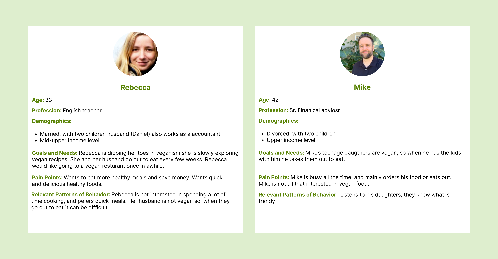

enVie A VEGAN RESTAURANT unsolicited website redesign
Timeline
Three weeks
Role
User research, personas, interviews, wireframes, final design
Tools
Figma
Overview
enVie is a popular local vegan restaurant in Halifax. Their website had several issues, so I did an unsolicited redesign.
Problem
Poorly designed websites deter users from engaging with them
Navigating through enVie's website was frustrating as there were several user interface and user experience issues, from color contrast, no CTA button, element inconsistencies, unnecessarily large images, lack of visual hierarchy, disorganized content, and text-alignment inconsistencies.


Solution
Redesign their website to be more user-friendly and have a modern look
Interviews
I interviewed 4 people, and here is what I found:
- There were issues with the UI of the website. These included unnecessarily large images, color contrast issues, and visual hierarchy.
- The text on the "Juice Cleanse Info" page had grammatically incorrect text that confused some of the users.
- Users had difficulty navigating the website. When I had them perform tasks such as trying to purchase a juice cleanse, it would take them several tries.
Research
Next, I performed a SWOT (Strength, Weakness, Opportunities, and Threats) competitive analysis on enVie and two other popular vegan restaurants in Halifax, Heartwood and Wild Leek.


Using the SWOT analysis, I could determine what features enVie could implement to have an advantage over the other restaurants. I wanted enVie also to have a delivery service, as this would boost sales.
Personas

Wireframes
Wireframes + why I added these elements


Final designs
The final design


REFLECTIONS
+ what I would do differently next time
While working on this case study, I learned a lot, these include:
- What you may think is an issue, others may not. Before I did the interviews, there were some things that I thought the interviewees would bring up, but they didn't.
- Sometimes, the best design is the simplest. I did many design iterations, especially for the hero page. I wanted something unique and creative, and bold. From what I had come up with, I realized the most generic design was the best solution. I realized that many design elements/components are similar because they work.
- In my following case study, I want to create a design system.
- I want to make this design mobile optimized.